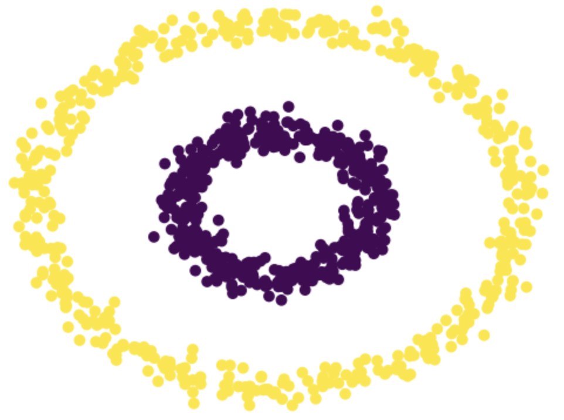
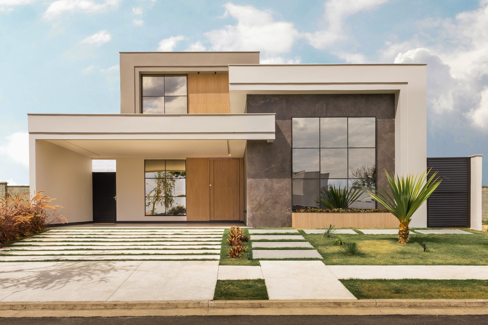
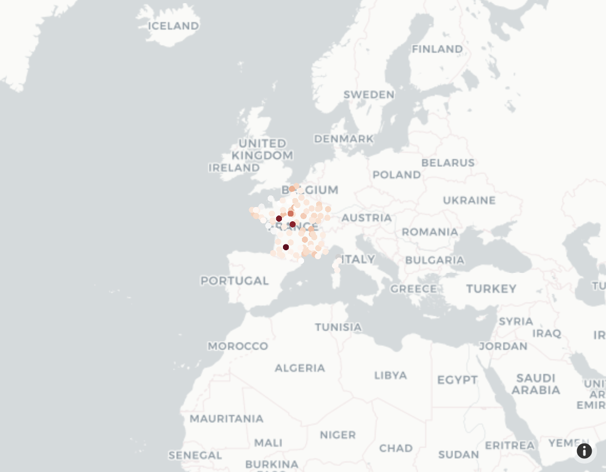

Jun Ryu
Blog
Blog
Categories
All
(12)
ML
(4)
OOP
(1)
R
(1)
html
(2)
math
(1)
modeling
(1)
project
(3)
python
(10)
sqlite
(3)
tensorflow
(2)
visualizations
(5)
Order By
Default
Title
Date - Oldest
Date - Newest
Author

Spectral Clustering. What is it?
python
ML
In this post, we will explore a simple version of the
spectral clustering
algorithm for clustering data points.…
Jun 21, 2023
Jun Ryu

Visualizing Zillow Homes
python
project
html
The goal of this project was for users to understand the distribution of homes for sale on Zillow. Typically, prospective home buyers and sellers go to Zillow to find…
Mar 24, 2023
Aram, Emily, Jun, Ryan
Fake News Classification
python
ML
tensorflow
Rampant misinformation — often called “fake news” — is one of the defining features of contemporary democratic life.
Mar 15, 2023
Jun Ryu
Objected Oriented Programming in R
R
OOP
We define a new object class
pqnumber
to handle computations with large floating point numbers.
Mar 9, 2023
Jun Ryu
Are You a Dog or Cat Person?
python
ML
tensorflow
In this blog post, we attempt to train a machine learning algorithm to distinguish the images of cats and dogs.
Feb 28, 2023
Jun Ryu
Flask Tutorial
python
sqlite
html
Today, we will demonstrate how to create a simple web application using
Flask
.
Feb 3, 2023
Jun Ryu
Web Scraping with Scrapy
python
visualizations
What movie or TV shows share actors with your favorite movie or show?
Jan 26, 2023
Jun Ryu
Plotly: Pure Perfection
sqlite
python
visualizations
What else can Plotly produce? Today, we continue with the NOAA climate data and explore what other visualizations can be made.
Jan 17, 2023
Jun Ryu

Climate Data Visualization
sqlite
python
visualizations
In this post, we will be working with the data from National Oceanic and Atmospheric Administration (NOAA) to create interesting, interactive geographical visualizations.
Jan 10, 2023
Jun Ryu
Predator-Prey Dynamics
math
modeling
project
In this project, we explore a predator-prey relationship between ducks (predator), fish (prey), and a common food source…
Nov 28, 2022
Jun, Kevin, Yuki
Adélie! Gentoo! Chinstrap!
python
visualizations
project
ML
An important task in the ecology of the Antarctic is to catalog the many different species of…
Mar 10, 2022
Jeremy, Jun, Meichen
Palmer Penguins
python
visualizations
In this blog post, we will explain how to construct an interesting data visualization of the Palmer Penguins data set.
Jan 23, 2022
Jun Ryu
No matching items